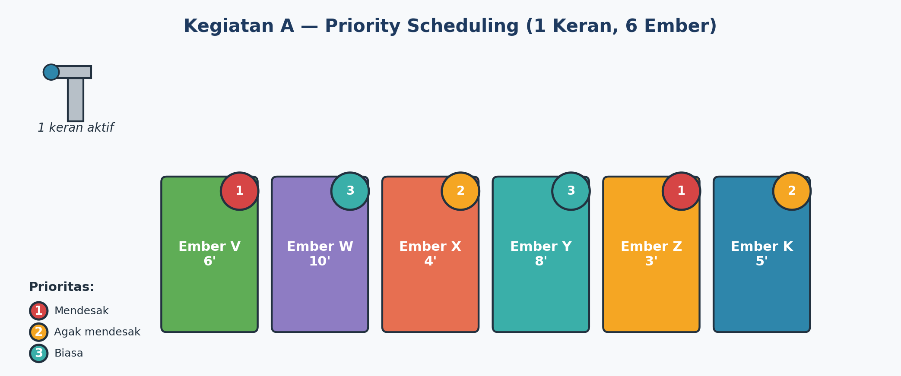
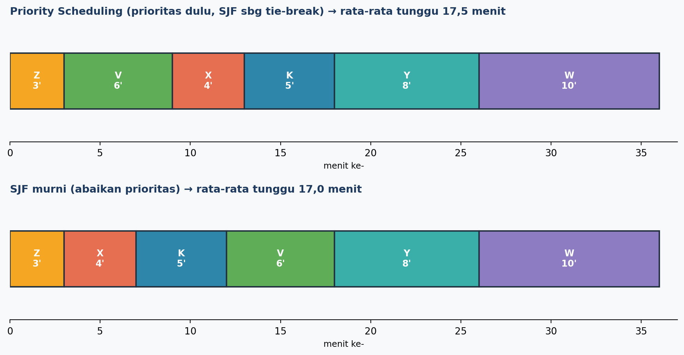
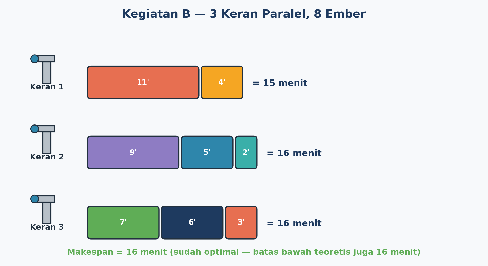
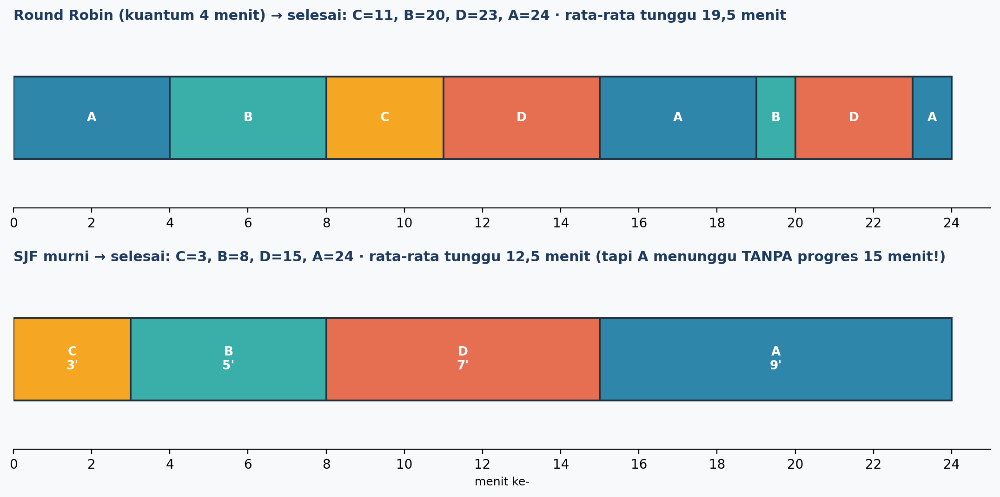

🔁 Sebelum Lanjut, Ingat Lagi Yuk!
Pertemuan lalu kita udah jago urusan FCFS dan SJF buat ngatur ember dengan 1 keran, terus belajar strategi LPT buat bagi beban ke 2 keran. Sekarang saatnya level up!
🚨 Kegiatan A: Kadang Cepat Aja Nggak Cukup
Musim kemarau, air makin susah. Sekolah nambah ember cadangan, tapi kali ini ada 2 ember berstatus DARURAT — satu buat isi ulang kotak P3K, satu lagi buat wastafel toilet yang harus segera terisi. Masalahnya, kalau kita cuma pakai SJF, ember darurat ini bisa aja nunggu lama kalau kebetulan ukurannya nggak paling kecil!
1 = Mendesak 2 = Agak mendesak 3 = Biasa

Aturannya: dahulukan prioritas angka terkecil. Kalau prioritasnya sama, baru pakai SJF (yang lebih cepat menang).
Urutan hasil: Z(3) → V(6) → X(4) → K(5) → Y(8) → W(10)

🧠 Coba sendiri: kalau Ember X (prioritas 2) ternyata prioritasnya diturunkan jadi 3, gimana urutannya berubah? (klik untuk lihat jawaban)
Urutan baru: Z → V → K → X → Y → W.
🚰🚰🚰 Kegiatan B: Sekarang Ada 3 Keran!
Minggu lalu kita udah coba bagi tugas ke 2 keran. Sekarang naik level lagi: 3 keran, 8 ember! Triknya masih sama kayak sebelumnya (strategi LPT: dahulukan yang paling lama, taruh di keran paling santai), cuma sekarang mikirnya harus lebih cermat karena pilihannya lebih banyak.

⚖️ Kegiatan C: Adil itu Penting, Lho!
Nah ini dia tantangan paling seru. Bayangin kalau kamu itu ember yang paling BESAR di antrean. Kalau semua orang pakai SJF terus-terusan, kamu bisa jadi ember yang PALING TERAKHIR diisi terus, karena selalu ada ember yang lebih kecil nyalip duluan. Kasian, kan? Ini namanya starvation alias "kelaparan giliran".
Makanya, ada strategi namanya Round Robin: tiap ember cuma dapat jatah waktu 4 menit per giliran, abis itu gantian ke ember lain, muter terus sampai semua penuh.
| Giliran | Ember | Sisa Sebelum | Durasi Jalan | Sisa Sesudah | Waktu Sekarang |
|---|---|---|---|---|---|
| 1 | A | 9 | 4 | 5 | 4 |
| 2 | B | 5 | 4 | 1 | 8 |
| 3 | C | 3 | 3 | 0 (selesai) | 11 |
| 4 | D | 7 | 4 | 3 | 15 |
| 5 | A | 5 | 4 | 1 | 19 |
| 6 | B | 1 | 1 | 0 (selesai) | 20 |
| 7 | D | 3 | 3 | 0 (selesai) | 23 |
| 8 | A | 1 | 1 | 0 (selesai) | 24 |

💻 Kegiatan D: Nulis Pseudocode, Yuk!
Sekarang saatnya belajar "ngomong" kayak komputer — pakai pseudocode! Ini bukan bahasa pemrograman beneran, tapi cara nulis langkah-langkah algoritma pakai kata-kata yang terstruktur dan mudah dipahami.
INPUT daftar_pekerjaan (nama, durasi)
URUTKAN daftar_pekerjaan berdasarkan durasi (menaik)
waktu <- 0
UNTUK setiap pekerjaan DALAM daftar_pekerjaan terurut:
waktu <- waktu + durasi_pekerjaan
CETAK nama_pekerjaan, "selesai pada menit ke-", waktu
SELESAI
Coba perhatikan pola di atas: MULAI, lalu INPUT data, URUTKAN, lalu proses tiap pekerjaan satu per satu pakai perulangan (UNTUK ... DALAM ...), sampai SELESAI. Nanti kamu akan diminta bikin pseudocode serupa untuk Priority Scheduling di LKPD!
🌍 Konsep Ini Ada di Sekitar Kita
UGD Rumah Sakit
Pasien kondisi kritis didahulukan, bukan yang datang duluan (priority).
Call Center
Penelepon dilayani bergiliran per beberapa menit agar semua terlayani (round robin).
Sistem Operasi Komputer
CPU membagi giliran proses agar aplikasi tidak macet menunggu.
Lampu Lalu Lintas
Tiap arah dapat giliran hijau bergantian dengan durasi tertentu.
⚡ Kuis Cepat: Cek Pemahamanmu
Klik jawaban yang menurutmu paling tepat!
1. Strategi yang mendahulukan pekerjaan PALING PENTING (bukan cuma tercepat) disebut...
2. Kondisi di mana suatu pekerjaan terus-menerus disalip pekerjaan lain sehingga menunggu sangat lama disebut...
3. Round Robin membuat penjadwalan lebih adil karena...
4. Kata kunci pseudocode yang digunakan untuk melakukan perulangan pada tiap pekerjaan dalam daftar adalah...
📝 Rangkuman Kilat
- Priority Scheduling = dahulukan yang PALING PENTING, bukan cuma yang tercepat.
- Strategi LPT tetap berlaku walau sumber dayanya nambah jadi 3 (atau lebih).
- Round Robin = bergiliran per jatah waktu tertentu, biar nggak ada yang "starvation" alias kelaparan giliran.
- Nggak ada strategi yang "menang telak" di semua aspek — semua punya trade-off antara efisiensi dan keadilan/kebutuhan.
- Pseudocode membantu kita menuliskan strategi penjadwalan jadi langkah-langkah yang jelas dan terstruktur.
🤔 Ayo, Renungkan
Setelah mempelajari materi ini, coba jawab pertanyaan berikut di buku catatanmu:
- Menurutmu, kapan sebaiknya kita pakai Priority Scheduling dibanding SJF murni dalam kehidupan sehari-hari?
- Pernahkah kamu merasa "starvation" dalam antrean di kehidupan nyata (misalnya nunggu giliran main, nunggu dilayani)? Ceritakan!
- Kalau kamu jadi perancang sistem antrean sekolah, strategi apa yang akan kamu pilih: efisiensi maksimal atau keadilan maksimal? Kenapa?
- Coba tulis satu baris pseudocode untuk langkah pertama dari strategi Priority Scheduling!